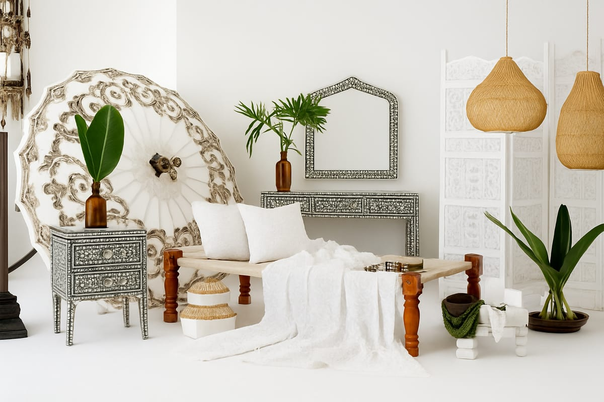

Pilgrimage Spaces Journal
How to choose the right service
Choosing the right starting point becomes much easier when you think about what your room needs most: structure, atmosphere, softness, or a stronger sense of story. Pilgrimage Spaces offers curated categories that each solve a different part of that picture.

Start with the role the piece needs to play
If your room feels unfinished because it lacks weight or visual structure, handcrafted furniture is usually the right place to begin. Larger pieces anchor the space and determine its overall tone. A considered table, bench, cabinet, or seating piece can immediately make a room feel more intentional.
Choose decor when the room needs personality
Decor and homeware are often the right choice when the basics are already in place but the room still feels generic. Decorative pieces add rhythm, contrast, and cultural texture without forcing a full redesign. They are especially useful when you want to give a space more depth through layered objects rather than through large furniture changes.
Use textiles to add warmth and cohesion
Textiles and soft furnishings are ideal when a room feels too hard, sparse, or visually cold. Cushions, throws, and fabric layers can connect separate furniture pieces and make the room feel more settled. They are also one of the easiest ways to bring softness into a space with wood, stone, or decorative surfaces.
A practical customer takeaway
Before enquiring, decide whether you need one hero piece, decorative finishing touches, or softness and layering. That single decision helps clarify which category deserves your attention first and makes your conversation with Pilgrimage Spaces more productive. When in doubt, start with the piece that will change the feeling of the room most noticeably.
Need help deciding?
Reach out with a short description of your space and what it currently lacks, and Pilgrimage Spaces can guide your enquiry in the right direction.